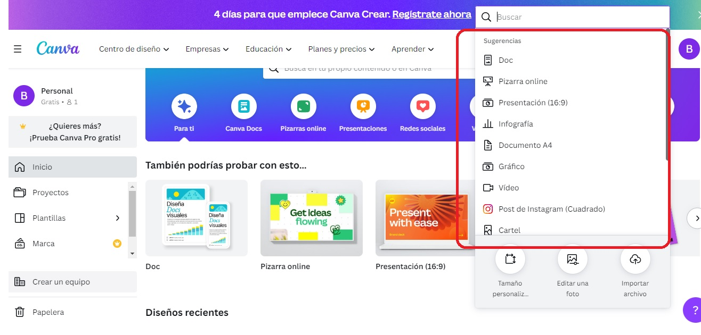

En este bloque veremos qué herramientas podemos usar para crear los diferentes tipos de contenido digital: hojas de cálculo, presentaciones, formularios, infografías, documentos...
Canva
Se trata de una plataforma gratuita donde puedes diseñar de manera online presentaciones, infografías, páginas web, vídeos cortos, etc. Para poder usarla hay que iniciar sesión o registrarse. Ofrece una enorme variedad de plantillas a partir de las cuales personalizar nuestros diseños. Es fácil de usar y ofrece un montón de utilidades y elementos gráficos.
Podemos empezar pulsando en el botón Crea un diseño. Nos aparece un menú con diferentes opciones:

Después de elegir el tipo de contenido que queremos crear, podremos empezar a realizar nuestro diseño a partir de una de las plantillas predefinidas o comenzar desde cero. Una vez finalizado el diseño, haciendo clic en el botón Compartir tenemos la opción de descargarlo en diferentes formatos, además de poder compartirlo ya sea para que otros puedan también hacer modificaciones o para que solo lo puedan ver.
Google Formularios
Podemos crear un formulario o cuestionario yendo a la página https://forms.google.com/. Otra forma de abrir la aplicación es desde Google Drive, pulsando en el botón Nuevo. También podemos acceder de la siguiente manera:
Dentro de la aplicación, tenemos la opción de crear un formulario en blanco o a partir de una plantilla. Luego, podemos cambiar el nombre, que se le ha asignado por defecto, haciendo clic en el cuadro de texto de la parte superior izquierda.
A continuación, editaríamos y personalizaríamos el formulario.
Para añadir preguntas:
Para editar preguntas:
Los cambios se guardan automáticamente en la nube.
Documentos de Google
La aplicación Documentos de Google permite crear y editar documentos online, con la posibilidad de trabajar de forma colaborativa y en tiempo real con un mismo documento.
Presentaciones de Google
Esta aplicación de Google nos permite crear y dar formato a diapositivas, además de trabajar en línea con otros usuarios. Una forma de acceder a ella es pulsando en el botón y buscando la aplicación. También se puede abrir desde Drive.
Igual que para acceder a cualquier otra aplicación online de Google hay que iniciar sesión previamente.
Genially
Se trata de una herramienta online para crear contenido digital: presentaciones, gamificación, infografías, mapas mentales, etc. Hay que iniciar sesión. El mayor inconveniente es que muchas funcionalidades están cerradas para el usuario que no es Premium.